bio3d reads Protein
Data Bank coordinate files into pdb objects.
fortify() turns their atom records into a table and
attaches bond endpoints for geom_edge_3d(). Each atom
retains its serial number, element and coordinate in angstroms.
This water molecule has explicitly specified connectivity. Bond endpoints refer to atom serial numbers, and can be supplied independently of the order of the atom records.
Installation is covered in Get started. The examples require bio3d and end by reading one of its bundled coordinate files.
water <- bio3d::as.pdb(xyz = c(0, 0, 0, 0.96, 0, 0, -0.24, 0.93, 0),
eleno = c(10, 40, 90), elety = c("O", "H1", "H2"),
elesy = c("O", "H", "H"), resid = "HOH", verbose = FALSE)
bonds <- data.frame(from = c(10, 10), to = c(40, 90))
atoms <- fortify(water, bonds = bonds)
ggplot(atoms) +
geom_edge_3d(shape = "tube", radius = 0.025, colour = "grey55") +
geom_sphere_3d(aes(x, y, z = z, radius = 0.4 * covalent_radius,
fill = I(colour)), detail = 2) + coord_3d(aspect = "data")
Atom sizes use a chosen fraction of the covalent radius; tube radius
is measured as a fraction of the longest model-box side.
aspect = "data" preserves coordinate distances. Element
radii and display colours come from bio3d’s periodic table.
A coordinate file
pdb <- bio3d::read.pdb(system.file("examples/1hel.pdb", package = "bio3d"), verbose = FALSE)
atoms <- fortify(pdb)
head(atoms[c("eleno", "elety", "element", "covalent_radius")])
#> eleno elety element covalent_radius
#> 1 1 N N 0.71
#> 2 2 CA C 0.76
#> 3 3 C C 0.76
#> 4 4 O O 0.66
#> 5 5 CB C 0.76
#> 6 6 CG C 0.76
head(get_edges_3d()(atoms))
#> from to x y z xend yend zend
#> 1 1 2 3.294 10.164 10.266 2.388 10.533 9.168
#> 2 2 3 2.388 10.533 9.168 2.438 12.049 8.889
#> 3 2 5 2.388 10.533 9.168 0.949 10.101 9.559
#> 4 3 10 2.438 12.049 8.889 2.552 12.428 7.626
#> 5 3 4 2.438 12.049 8.889 2.406 12.898 9.815
#> 6 5 6 0.949 10.101 9.559 -0.050 10.621 8.573When connectivity is omitted, fortification estimates candidate bonds
using a distance at most bond_scale times the sum of the
two covalent radii. The default multiplier is 1.2. This rule supplies
connections for a geometric view; curated chemical connectivity can be
passed as bonds. An empty bond table draws atoms alone.
Element symbols must be recorded in the elesy field.